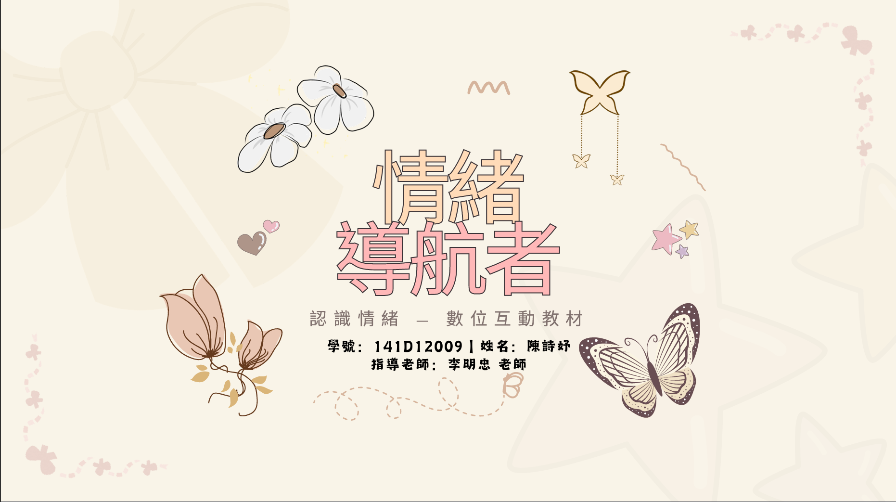
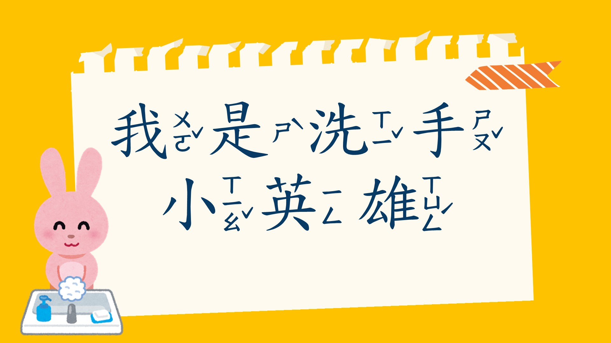
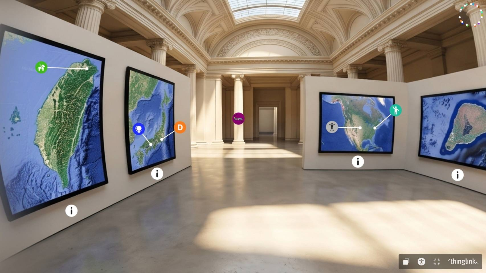

PORTFOLIO · INTERVIEW EDITION以互動設計，
以互動設計，
讓學習更容易開始
我能帶來的能力
- 數位教材設計將學習目標轉化為清楚、有邏輯的教材內容。
- 互動學習規劃運用情境、選擇與回饋，提升學習者參與感。
- 健康教育內容創作以故事、圖像與操作活動傳遞健康知識。
精選作品
互動教材

數位內容


作品展示影片
環遊世界×文化探索
《環遊世界×文化探索》作品展示影片，可直接在此播放觀看。
- 作品目的
- 透過環遊世界的情境，引導學習者認識不同文化特色
- 呈現方式
- YouTube 影片作品展示